철도신호기사 (2011-03-20 기출문제)
1과목: 전자공학
1. 그림과 같은 논리회로의 출력 Y가 옳지 않은 것은?
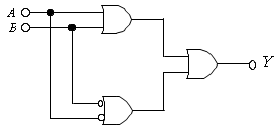
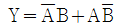
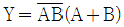
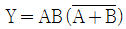
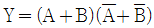
(정답률: 36%)

2. 다음 중 정현파 발진기에 속하는 것은?
- 멀티 바이브레이터
- 블로킹 발진기
- LC 발진기
- 톱니파발진기
(정답률: 70%)
3. 그림의 윈 브릿지(Win Bridge) 발진회로에서 발진 주파수[Hz]는?
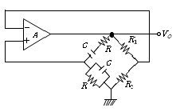
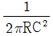
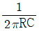
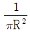
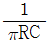
(정답률: 82%)
4. 진폭 변조도를 m 이라 할 때 m ＞1이 되면 변조 일그러짐이 일어나는데 이를 무엇이라 하는가?
- 양변조
- 음변조
- 과변조
- 고전력변조
(정답률: 75%)
5. 연산증폭기를 이용한 전력 증폭회로에서 크로스오버 일그러짐을 방지하기 위해 사용되는 것은?
- 저항
- 콘덴서
- 다이오드
- 코일
(정답률: 60%)
6. 그림 바이어스 회로에서 안정도 S 를 좋게 하려면?
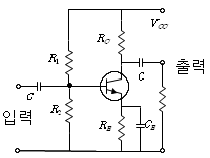
- Rc 를 크게 하고 Vcc 를 높게 한다.
- R1 과 R2를 크게 하고 RE 를 적게 한다.
- RE 를 적게 하고 R1 을 크게 한다.
- RE 를 크게 하고 R1 과 R2 를 적게 한다.
(정답률: 43%)
7. 전압이득이 A인 연산증폭기 회로에서 입력을 Vi라 하면 출력 Vo는?
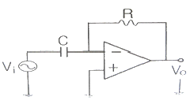
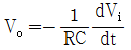
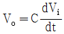
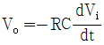
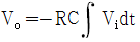
(정답률: 84%)
8. Vc = 30cosωct[V]의 반송파를 Vs = 20cosωmt[V]의 신호파로 진폭 변조했을 때의 변조도는 몇 % 인가?
- 5[%]
- 15[%]
- 46[%]
- 67[%]
(정답률: 74%)
9. 다음 중 멀티바이브레이터의 동작과 거리가 먼 것은?
- 전원전압이 변동해도 발진주파수에는 큰 변화가 없다.
- 출력에 많은 고조파를 포함한다.
- 회로의 시정수로 출력파형의 주기가 결정된다.
- 부궤환 작용으로 발진하는 회로이다.
(정답률: 42%)
10. 그림과 같은 트랜지스터 회로의 논리 게이트는?
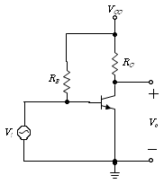
- NOT
- AND
- EX-OR
- EX-NOR
(정답률: 69%)
11. 다음 중 실리콘 BJT의 순방향 바이어스된 베이스-이미터 접합의 양단 전압은?
- 0.1[V]
- 0.2[V]
- 0.4[V]
- 0.7[V]
(정답률: 74%)
12. 다음 중 농도 차이에 의한 전자 혹은 정공의 흐름은?
- 확산전류
- 드리프트전류
- 차단전류
- 포화전류
(정답률: 84%)
13. 증폭회로의 전압 증폭도가 30인 경우 이는 약 몇 [dB]인가?
- 20[dB]
- 25[dB]
- 30[dB]
- 35[dB]
(정답률: 79%)
14. 다음 중 발진회로를 이용하지 않는 것은?
- 동기 검파
- 다이오드 검파
- 링 변조
- 헤테로다인 검파
(정답률: 46%)
15. 아래 회로에서 입력신호(Vi)가 정현파인 경우 출력(Vc) 파형은?
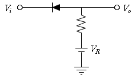
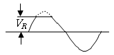
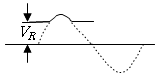
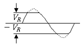
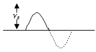
(정답률: 47%)
16. 차동증폭기의 차동 전압이득이 2000, 동상 전압이득이 0.2V일 때, CMRR은 몇 [db]인가?
- 60[db]
- 70[db]
- 80[db]
- 90[db]
(정답률: 87%)
17. 다음 중 지연 특성을 갖으며, 채터링(chattering) 현상을 방지하기 위해 사용하는 플립플롭은?
- T 플립플롭
- JK 플립플롭
- D 플립플롭
- RS 플립플롭
(정답률: 55%)
18. 다음 중 접합용량이 역바이어스 전압에 따라 변하는 다이오드는?
- 제너 다이오드
- 터널 다이오드
- 바렉터 다이오드
- 쇼트키 다이오드
(정답률: 59%)
19. 접합형 전계효과 트랜지스터의 핀치 오프(pinch off) 상태에 관한 설명 중 틀린 것은?
- 채널의 폭이 최소가 된다.
- 항복현상이 일어나는 전압이 된다.
- 드레인 전류가 차단된다.
- 채널의 저항이 최대가 된다.
(정답률: 75%)
20. 다이오드 정류회로에서 여러 개의 다이오드를 병렬로 연결해서 사용하는 주된 이유는?
- 다이오드를 과전압으로부터 보호하기 위하여
- 다이오드를 과전류로부터 보호하기 위하여
- 부하 출력의 맥동률을 감소시키기 위하여
- 입력 전압을 안정화시키기 위하여
(정답률: 79%)
2과목: 회로이론 및 제어공학
21. RLC 직렬회로에서 자체 인덕턴스 L = 0.02[mH]와 선택도 Q = 60 일 때 코일의 주파수 f = 2[㎒]였다. 이 코일의 저항은 몇[Ω]인가?
- 2.2
- 3.2
- 4.2
- 5.2
(정답률: 62%)
22. 각 상전압이 Va = 40sinωt[V], Vb = 40sin(ωt+90°)[V], Vc = 40sin(ωt-90°)[V]이라 하면 영상대칭분의 전압은?
- 40sinωt
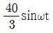
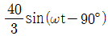
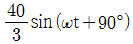
(정답률: 50%)
23. 분포정수 회로에서 선로의 특성임피던스 Zo, 전파정수를 γ라 할 때 무한장 선로에 있어서 송전단에서 본 직렬임피던스는?
- γZo
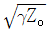
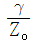
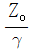
(정답률: 59%)
24. 그림과 같은 회로에 t = 0에서 S를 닫을 때의 방전 과도전류 i(t) [A]는?
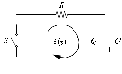
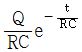
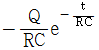
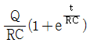
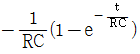
(정답률: 42%)
25. 비정현파 전류 i(t) = 56sinωt + 25sin2ωt + 30sin(3ωt+30°) + 40sin(4ωt+60°)로 주어질 때 왜형율은 약 얼마인가?
- 1.4
- 1.0
- 0.5
- 0.1
(정답률: 58%)
26. R = 5[Ω], L = 20[mH] 및 가변 콘덴서 C로 구성된 RLC직렬회로에 주파수 1000[㎐]인 교류를 가한 다음 C를 가변시켜 직렬 공진시킬 때 C의 값은 약 몇 [㎌]인가?
- 1.27
- 2.54
- 3.52
- 4.99
(정답률: 54%)
27. 라플라스 변환함수
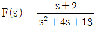
에 대한 역변환 함수f(t)는?- e-2tcos3t
- e-3tco2t
- e3tcos2t
- e2tcos3t
(정답률: 67%)
28. 대칭 6상 성형(Star)결선에서 선간전압과 상전압의 관계가 바르게 나타난 것은? (단, Et : 선간전압, Ep : 상전압)
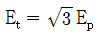
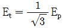
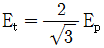
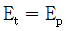
(정답률: 58%)
29. 기전력 E, 내부저항 r인 전원으로부터 부하저항 RL에 최대 전력을 공급하기 위한 조건과 그 때의 최대전력 Pm은?
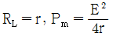
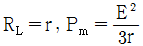
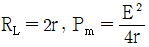
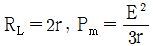
(정답률: 65%)
30. 4단자 회로에서 4단자 정수를 A, B, C, D 라 하면 영상 임피던스
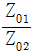
는?- D/A
- B/C
- C/B
- A/D
(정답률: 59%)
31. 어떤 시스템을 표시하는 미분방정식이
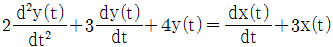
인 경우 x(t)를 입력, y(t)를 출력이라면 이 시스템의 전달함수는? (단, 모든 초기조건은 0 이다)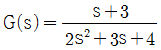
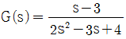
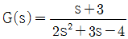
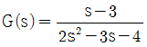
(정답률: 65%)
32. 그림과 같은 신호 흐름 선도에서 y2/y1 은?
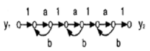
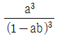
(정답률: 67%)
33. 특성방정식 (S+1)(S+2)(S+3)+K(S+4)=0 의 완전 근궤적상 K = 0인 점은?
- S = -4인 점
- S = -1, S = -2, S = -3인 점
- S = 1, S = 2, S = 3인 점
- S = 4인 점
(정답률: 73%)
34. 선형 시불변 시스템의 상태 방정식이 로 표시될 때, 상태 천이 방정식(state transition equation)의 식은? (단, ø(t)는 일치하는 상태 천이 행렬이다)
(정답률: 59%)
35. 2차 시스템의 감쇄율 δ가 δ ＞ 1 이면 어떤 경우인가?
- 비 제동
- 과 제동
- 부족 제동
- 발산
(정답률: 67%)
36. 그림과 같은 폐루프 전달함수 에서 H에 대한 감도 STH는?
(정답률: 42%)
37. 보드 선도의 이득 교차점에서 위상각 선도가 –180°축 의 상부에 있을 때 이 계의 안정 여부는?
- 불안정하다
- 판정불능이다.
- 임계 안정이다.
- 안정하다.
(정답률: 50%)
38. 인 계의 이득 여유는?
- -20[㏈]
- -10[㏈]
- 1[㏈]
- 10[㏈]
(정답률: 55%)
39. Nyquist 판정법의 설명으로 틀린것은?
- Nyquist 선도는 제어계의 오차 응답에 관한 정보를 준다.
- 계의 안정을 개선하는 방법에 대한 정보를 제시해 준다.
- 안정성을 판정하는 동시에 안정도를 제시해 준다.
- Routh-hurwitz 판정법과 같이 계의 안정여부를 직접 판정해 준다.
(정답률: 47%)
40. 다음 중 을 z변환하면?
(정답률: 24%)
3과목: 신호기기
41. 전기 전철기에 사용되는 클러치 중 마그네트 클러치의 설명으로 맞는 것은?
- 영구자석을 이용하여 비접촉 구조로 회전력을 전달한다.
- 클러치 Coil을 여자시켜 발생한 전자 에너지로 회전력을 전달한다.
- 전자석을 이용하여 회전력을 전달한다.
- 철판제의 마찰판을 수겹으로 겹쳐 쌓은 구조이다.
(정답률: 54%)
42. 분기기의 크로싱(Crossing)번호와 운전상의 안전관계에 관한 설명으로 맞는 것은?
- 분기기의 크로싱(Crossing)번호가 클수록 고속운전 용이다.
- 분기기의 크로싱(Crossing)번호가 클수록 곡선이 심하다.
- 분기기의 크로싱(Crossing)번호가 적을수록 기계적으로 강하다.
- 분기기의 크로싱(Crossing)번호가 적을수록 직선에 가깝다.
(정답률: 75%)
43. 직류 전동기의 속도제어 방법 중 광범위한 속도 제어가 가능하며 운전 효율이 가장 좋은 것은?
- 직렬저항제어
- 전압제어
- 병렬저항제어
- 계자제어
(정답률: 65%)
44. 기동 저항기를 전기자 회로에 직렬로 삽입하여 기동전류를 제한하고 있는 전동기는?
- 교류 전동기
- 직류 전동기
- 회전 변류기
- 유도기
(정답률: 60%)
45. 4극 60[Hz]의 3상 권선형 유도전동기의 전부하 슬립이 4[%]일 때 전부하 토크로 1200[rpm]의 회전을 유지하려면 2차 회로에 약 몇 [Ω]의 저항을 삽입하여야 하는가? (단, 2차 권선은 Y 접속이고 각 상의 저항은 0.4[Ω]이다.)
- 2.9
- 2.2
- 1.8
- 1.5
(정답률: 60%)
46. 변압기 시험 중 정수 측정에 필요 없는 것은?
- 무부하실험
- 절연내력시험
- 단락시험
- 저항측정시험
(정답률: 72%)
47. 단상 변압기를 병렬 운전하는 경우 부하 전류의 분담과 관계되는 것은?
- 누설 임피던스에 비례한다.
- 누설 리액턴스에 비례한다.
- 누설 임피던스에 반비례한다.
- 누설 리액턴스에 반비례한다.
(정답률: 60%)
48. 직류기의 정류불량의 원인 중에서 설계불량에 해당되지 않는 것은?
- 부적성 보극
- 브러시의 선택 불량
- 리액턴스 전압의 과대
- 정류자의 편심
(정답률: 50%)
49. 전기 선로전환기의 제어 계전기에 대한 설명 중 옳은 것은?
- 직류 24[V], 2의 무유도 부하를 연속 개폐할 수 있는 선조 계전기
- 직류 24[V], 2위식 계전기로 전류의 유무만으로 동작하는 계전기
- 직류 24[V]로서 고립한 무극계전기 2개로 되고 2개의 접극자 구조를 연동 구조에 의해 제약 되도록 한 계전기
- 직류 24[V]로서 2위식 자기유지형으로 직류전원의 전극에 의해 제어되는 계전기
(정답률: 70%)
50. 여객열차의 계획운전속도의 최대값이 120[km/h]일 때 ATS 지상자 설치지점으로 적당한 것은 신호기로부터 몇 [m] 지점에 설치하는 것이 맞는가?
- 900m
- 1100m
- 1300m
- 1500m
(정답률: 47%)
51. 접점수가 NR2/NR2이고 정격전류가 125[mA], 선륜저항이 4[Ω], 사용전압이 0.5[V]인 계전기는?
- 직류 단속계전기
- 직류 궤도 연동계전기
- 직류 유극 선조계전기
- 직류 무극 궤도계전기
(정답률: 67%)
52. 단상 50[kVA], 1차 3300[V], 2차 220[V], 60[Hz] 변압기가 있다. 1차 권수 600회, 철심의 유효 단면적 160[cm2]의 변압기 철심의 자속밀도[Wb/m2]는 약 얼마인가?
- 1.3
- 1.7
- 2.3
- 2.7
(정답률: 47%)
53. 건널목 전동차단기에는 어떤 전동기가 주로 사용되는가?
- 직류 직권전동기
- 직류 분권전동기
- 단상 유도전동기
- 직류 복권전동기
(정답률: 80%)
54. 철도 건널목 경보장치의 경보등의 확인거리는 특수한 경우 이외는 몇 [m] 이상인가?
- 35
- 45
- 55
- 65
(정답률: 77%)
55. 장대형전동차단기의 조정범위에서 정격전압은?
- DC 10V
- DC 12V
- DC 24V
- DC 36V
(정답률: 80%)
56. 콘덴서 기동형 단상유도전동기가 사용되는 기기는?
- 전동차단기
- NS형 전기선로전환기
- MJ81형 선로전환기
- 침목형 선로전환기
(정답률: 77%)
57. 4극 50Hz, 20kW인 3상 유도전동기가 있다. 전부하시의 회전수가 1,450rpm이라면 발생 토크는 약 몇 [kg ㆍm]인가?
- 49.8
- 47.8
- 13.4
- 11.87
(정답률: 62%)
58. 전동차단기 전자석에 전류가 흐르지 않을 때 전자석 브레이크와 아마추어와의 이격 거리는 몇 [㎜]인가?
- 1~1.5
- 1.5~2
- 2~2.5
- 2.5~3
(정답률: 47%)
59. 3상 유도 전동기의 특성 중 비례추이를 할 수 없는 것은?
- 토크
- 출력
- 1차 압력
- 2차 전류
(정답률: 34%)
60. 다음 중 SCR의 설명으로 옳은 것은?
- PNPN 구조를 갖는 4층 반도체 소자
- 스위칭 기능을 갖는 쌍방향성의 3단자 소자
- 제어 기능을 갖는 쌍방향성의 3단자 소자
- 증폭 기능을 갖는 단일 방향성의 3단자 소자
(정답률: 74%)
4과목: 신호공학
61. 신호용 정류기에서 정류회로의 무부하 전압이 28V이고, 전부하 전압이 24V일 때 전압변동률은 약 몇 % 인가?
- 12
- 14
- 17
- 19
(정답률: 73%)
62. 신호전구 설비수가 100개일 때 년간 장애수가 50건이라면 고장률은 얼마인가?
- 57 × 10-6
- 137 × 10-6
- 0.5
- 0.2
(정답률: 84%)
63. 최고속도 70㎞/h 인 전동열차 운행시 ATS 지상자와 신호기간의 적정한 제어거리[m]는?
- 약 220
- 약 2⑤
- 약 280
- 약 310
(정답률: 50%)
64. 크로싱부에 노스 가동 분기기를 설치해야 하는 분기기 번호는?
- F7
- F12
- F18.5
- F8
(정답률: 75%)
65. 경부고속철도에서 사용하는 선로전환기에 관한 설명으로 틀린것은?
- 공급 전원은 3상 380V/220V이다
- 선로전환기 전환 시간은 8초 이하이다.
- 선로전환기 동정은 110~260[mm]이다.
- 최대부하 400[㎏] 정격부하 200[㎏]이다.
(정답률: 40%)
66. 단선구간의 선로용량에 관하여 표현한 식으로 옳은 것은? (단, N은 역 사이의 선로용량, T는 역 사이의 평균열차 운행시간[분], C는 폐색취급시간[분], f는 선로 이용률이다)
(정답률: 77%)
67. 10/1000 이상의 상구배에 설치된 폐색신호기가 정지 신호를 현시할 경우 열차가 정지하지 않고 일정 속도로 진입할 수 있도록 지시하는 것은?
- 유도신호기
- 자동폐색신호기
- 서행허용표지
- 원방신호기
(정답률: 59%)
68. 우리나라 고속철도의 UM71C무절연 궤도회로의 선로에 사용되는 보상용 콘덴서에 대한 설명으로 맞는 것은?
- 손실이 적고 임피던스가 높으며 동조회로 특성계수를 개선하는데 사용되며 전차선 전류를 15[A]로 제한 시킨다.
- 공심유도자에 연결시켜 주파수를 분할하기 위하여 사용한다.
- 레일 인덕턴스호과를 제한시키고 신호감쇠현상을 줄이기 위하여 사용한다.
- 궤도회로 고조파성분을 제한하고 전차선 귀선전류를 조정하기 위하여 사용한다.
(정답률: 70%)
69. 건널목 전동 차단기의 구성요소로 틀린 것은?
- 직류 직권전동기
- 감속치차 장치
- 마찰연축기
- 고장 검지부
(정답률: 58%)
70. 삽입형 계전연동장치에서 전철선별계전기를 제어하여 선로전환기의 전환방향을 결정하는 회로는?
- 진로선별회로
- 진로조사회로
- 전철제어회로
- 접근쇄정회로
(정답률: 55%)
71. 경부고속철도 46번 분기기의 ATC속도코드 설정시 건넘선 방향으로의 최대통과 속도[㎞/h]는?
- 90
- 130
- 170
- 230
(정답률: 60%)
72. 단선궤도회로식 건널목경보장치에서 경보구간에 열차가 없을 때 (평상시)의 각종 계전기의 동작상태는?
- SLR여자, CSR무여자, R1여자, R2여자
- SLR무여자, CSR여자, R1여자, R3여자
- SLR무여자, CSR무여자, R1여자, R2여자
- SLR무여자, CSR무여자, R1여자, R3무여자
(정답률: 65%)
73. 건널목경보기 2440형의 발진주파수 범위는?
- 20㎑ ± 2㎑ 이내
- 20㎑ ± 4㎑ 이내
- 40㎑ ± 2㎑ 이내
- 40㎑ ± 4㎑ 이내
(정답률: 59%)
74. 전기 선로전환기의 전철제어계전기를 제어하는 계전기로 선로전환기를 전환하여도 좋을 때만 여자하고 평상시에는 무여자 상태가 되어 선로전환기를 쇄정하는 계전기는?
- WR
- WLR
- NR
- RR
(정답률: 57%)
75. 신호보안장치의 안전측 동작 원칙으로 적당하지 않은 것은?
- 전원과 계전기 위치를 양단으로 결선한다.
- 궤도회로는 폐전로식으로 한다.
- 양선으로 계전기를 제어하는 방식이다.
- 계전기회로는 여자시 기기를 쇄정하는 방식이다.
(정답률: 62%)
76. ATC 연속제어는 어느 궤도회로를 기반으로 가능한가?
- AC Track Circuit
- DC Track Circuit
- AF Track Circuit
- High Voltage lmpulse Track Circuit
(정답률: 84%)
77. 경부고속선에 운용중인 UM71C형 궤도회로에 전기적 절연을 위해 사용되는 주파수가 아닌 것은?
- 2040[㎐]
- 2400[㎐]
- 2570[㎐]
- 3120[㎐]
(정답률: 85%)
78. 철도신호에서 사용하는 시소계전기에 대한 설명으로 맞는 것은?
- ON-delay Timer이다.
- OFF-delay Timer이다.
- 순시 동작형 Timer이다.
- 순시 복귀형 Timer이다.
(정답률: 54%)
79. 분주 궤도회로구간에서 임피던스 본드 설치구간이 아닌 기타구간에서 궤도회로의 단락감도는?
- 0.01Ω 이상
- 0.1Ω 이상
- 0.03Ω 이상
- 0.3Ω 이상
(정답률: 60%)
80. 경부고속철도 불연속 정보전송용 루프케이블 설치기준으로 틀린 것은?
- 루프케이블의 길이는 4.5[m]와 7[m]가 있다.
- 최고속도 230[㎞/h]를 초과 할 때에는 7[m] 루프케이블을 설치하여야 한다.
- 루프케이블간의 간격은 20[m] 이상이어야 한다.
- 정방향과 역방향용 루프케이블은 따로 설치하여야 한다.
(정답률: 29%)
입력 A와 B가 모두 1일 때, AND 게이트를 통해 출력 Y는 1이 됩니다. 하지만 OR 게이트를 통해 출력 Z는 0이 됩니다. 따라서 Y와 Z의 값이 다르므로, "" 이 옳지 않은 것입니다.